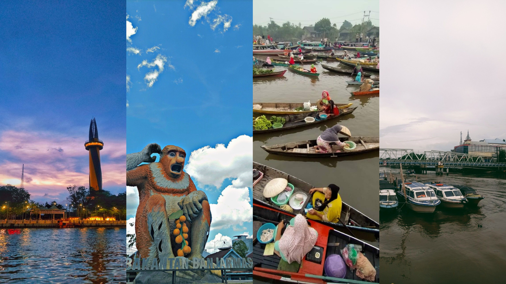

01 / HOMETOWN
Banjarmasin,
SOUTH KALIMANTAN.
A place I call home — shaped by nature, culture, people, and memories.

02 / A BRIEF DESCRIPTION
Home is more than a place on a map.
Banjarmasin is a city in South Kalimantan, Indonesia. It is a place associated with natural landscapes, local traditions, and a close connection to everyday community life. For me, hometown is also a collection of memories and experiences that became part of my story.
03 / WHAT I ASSOCIATE WITH HOME
01
Nature
The rivers and wetlands that shape the character of Banjarmasin.
02
Culture
Banjar traditions, food, and culture that make the city feel like home.
03
People
Familiar faces and community that make a hometown feel personal.